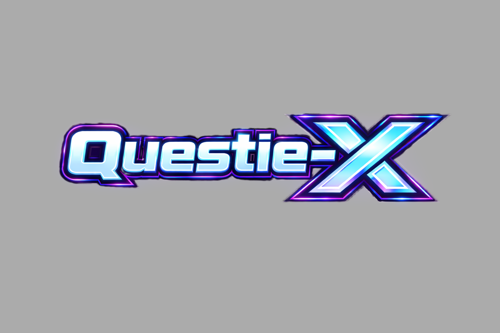

A universal WoW quest-helper with a plugin architecture for any private server.
Version: v1.3.1
View
Changelog
Questie-X introduces QuestieLearner, a zero-configuration autonomous engine that learns the world as you play. It automatically bridges the gap between static database entries and real-time server-side realities.
Learns NPC spawns, Quest relationships, Object locations, and Item drops directly from combat logs and interaction events. No manual wiring or database entry required.
Implements a precision-first scaling logic that normalizes 3.3.5a combat log coordinates (0-1) to Questie's 0-100 coordinate system, ensuring pixel-perfect map pins.
A bidirectional relationship engine that automatically stitches connections between learned entities. If an item drops from an NPC for a specific quest, QuestieLearner cross-links all three, immediately enabling map pins and tooltips for that item-source chain.
To ensure database quality in crowd-sourced environments, Questie-X implements a multi-tier verification model.
Every learned entry tracks its "Match Count". Data is promoted to Verified status once it reaches the user-defined confidence threshold (default: 2).
A tiered pruning engine tracks "Last Seen" (ls) timestamps. Unconfirmed data is automatically aged out after 90 days, while Verified entries are protected from expiration.
Questie-X utilizes hidden communication channels to synchronize confidence metrics and learned data across the player base in real-time.
To support custom servers without polluting the base WotLK database, Questie now implements a modular override system. This allows custom quests, NPCs, and objects to be defined in a safe namespace that persists across upstream updates.
Database/Ebonhold/
├── EbonholdLoader.lua # Main injection hook
├── Zones/
│ └── EbonholdZoneTables.lua # Custom AreaID/MapID mappings
└── Ebonhold/
├── EbonholdQuestDB.lua # Custom Quest definitions
└── EbonholdNpcDB.lua # Custom NPC spawn overridesThe system hooks into QuestieDB:Initialize(). Instead of modifying
QuestieDB.questData directly, it populates the override tables which are checked during
quest retrieval.
-- EbonholdLoader.lua snippet
local function InjectOverrides()
for id, data in pairs(EbonholdDB.questData) do
QuestieDB.questDataOverrides[id] = data
end
endFor large-scale "kill count" quests (e.g., 75 Dragonkin), I utilize the killCreditObjective
pattern. This allows a single quest objective to be mapped to a dynamic list of NPC IDs.
killCreditObjective (Index [10][5]) ensures that all
participating NPC spawns appear on the map, but only one counter appears in the
tracker.
-- Example implementation (EbonholdQuestDB.lua)
[50064] = {
[1] = "Heart of the Dragonflights",
[10] = {
nil, nil, nil, nil,
{ -- killCreditObjective
{
{ 26276, 26277, 26322, ... }, -- All NPC IDs
26322, -- Root ID (Icon/Text)
"Dragonkin slain" -- Display Text
}
}
},
[30] = 30, -- Objective Count
}